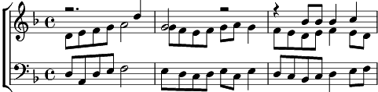

1. N'allez pas Julie, vous rouler dans l'herbe
Quand Monsieur l'abbé déjeune au château
N'allez pas non plus jouer aux proverbes
Avec les bergers aux tendres flûtiaux.
Et je vous défends, vilaine petite,
Nue dans la rivière, au milieu du bourg,
De dire aux pêcheurs: "je suis une truite.
Me pêche qui veut m'apprendre l'amour"
Refrain:
Les yeux baissés,
Les genoux serrés,
Faites de la dentelle
Faites de l'aquarelle,
De la tapisserie,
De la pâtisserie,
Mais n'allez pas surtout
Courir le guilledou
Avant de prendre époux.
2. Avec Ferdinand, vous n'êtes plus d'âge
A vous trémousser folle sur ses genoux,
En lui agaçant le bout des moustaches
Pour voir si ça pique ou bien si c'est doux!
Et quand vous sentez son trouble, Julie
Ne demandez pas d'un air innocent:
"Cousin, dites-moi si je suis jolie,
Et si je fais plus que mes dix-huit ans"
Refrain
3. Un matin, Julie, blanche à la chapelle,
Devant la famille vous direz ce "oui"
Qui vous livrera timide gazelle,
Aux tendres assauts de votre mari.
Dès le lendemain, vous serez tranquille,
Je ne serai plus là pour vous gronder.
Vous pourrez alors, femme d'imbécile,
Prendre autant d'amants que vous le voudrez.
Coda:
Les yeux baissés,
Les genoux serrés,
Faites de la dentelle,
Faites de l'aquarelle,
De la tapisserie,
De la pâtisserie,
En attendant le jour,
Qui ne saurait tarder,
De votre liberté.